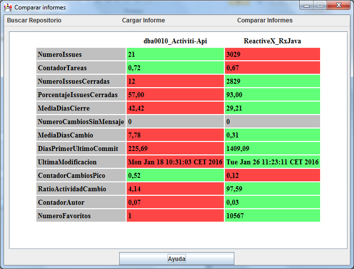

En esta pantalla se muestran los resultados de comparar dos informes.
Los resultados mostrados son solo de las métricas de que se pueden comparar. Estas aparecen en una tabla con los valores más óptimos para cada una en verde y los menos óptimos en rojo.
